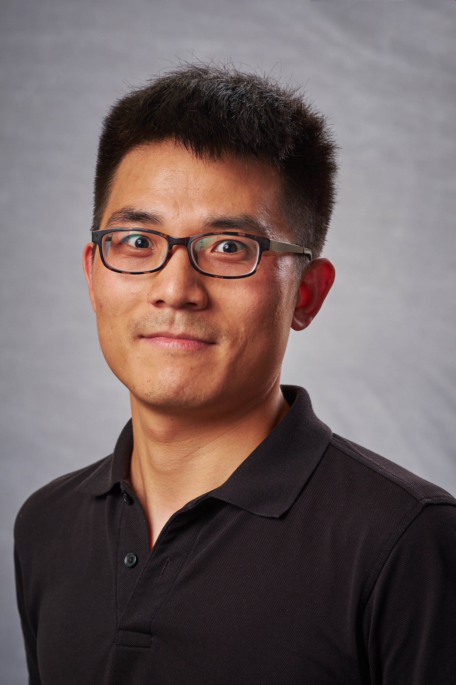
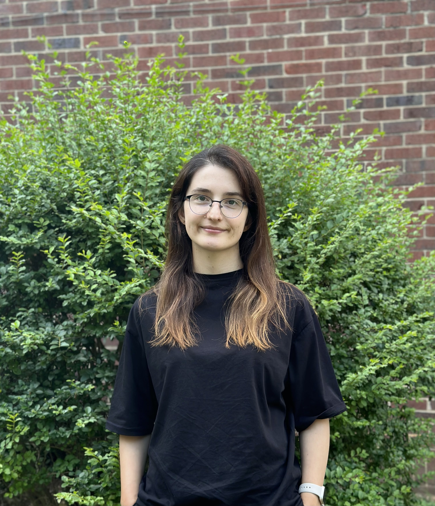
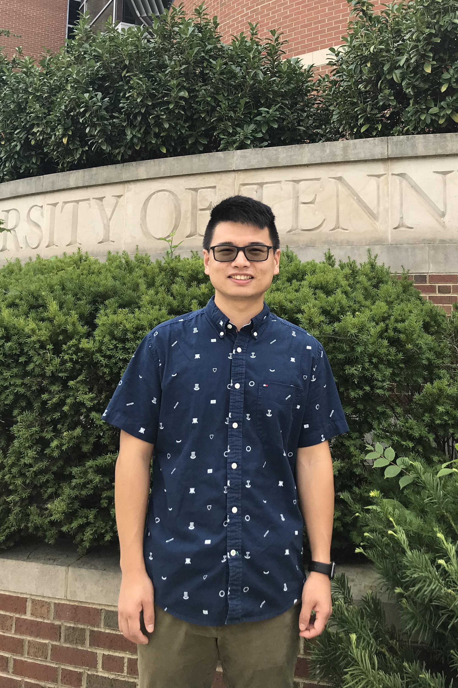

Principal Investigator

Zhenbo Wang, Ph.D.
Associate Professor
Director of the Autonomous Systems Laboratory (ASL)
The University of Tennessee, Knoxville
Phone: 865-974-9352 (office)
Email: zwang124@utk.edu
PhD Students

Fatma Yamac (Fall 2023 – present)
Ali Barzegar (Fall 2023 – present)

Abu Muzahid (Fall 2023 – present)

Nafiseh Boghrabadi (Fall 2023 – present)

Katherine Vasiloff (Summer 2023 – present)

Sabrullah Deniz (Spring 2021 – Spring 2026)
Yufei Wu (Fall 2020 – Summer 2024)

Yang Shi (Fall 2019 – Spring 2023)
MS Students
Trey Copeland (Fall 2020 – Fall 2025)
Israel Adesina (Spring 2023 – Fall 2024)
Chapel Rice (Fall 2020 – Spring 2022)
Undergraduate Students
Katherine Vasiloff (August 2022 – May 2023)
Gabriel Hatcher (January 2021 – May 2021)
Brian Coulter (August 2020 – May 2021)
Megan Abella (June 2020 – May 2021)
Spencer McDonald (August 2018 – May 2020)
Spencer was the recipient of the AIAA Foundation Ellis F. Hitt Digital Avionics Scholarship and the National Science Foundation (NSF) Graduate Research Fellowship Program (GRFP) award. He graduated from MIT with a Master’s Degree in Aerospace Engineering and a Master’s Degree in Transportation and Logistics in May 2023.
Visiting Scholars
Boris Benedikter (PhD student, Sapienza University of Rome, March 2021 – July 2021)